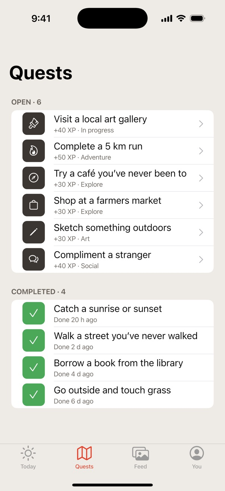
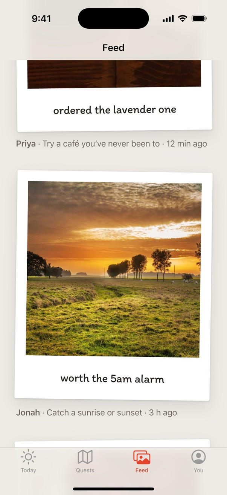

Project 01Machine learning

A mobile app I built with friends at a hackathon to get people out into the real world and touch some grass.




 Dart
Dart Flutter
Flutter Firebase
FirebaseProject 02Mobile
We taught ourselves Flutter and Firebase as we went. Location tracking was the part that was hardest to get right, and the part we are proudest of. Side Quests took home three VicHack awards.
Project 01Machine learning
Project 03Graphics

Project 04Developer tools